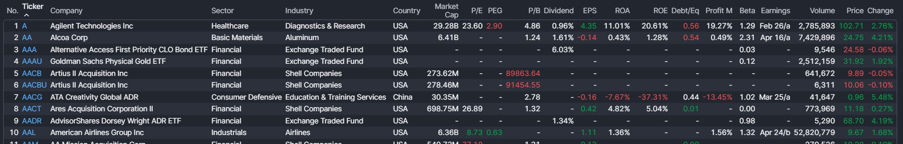
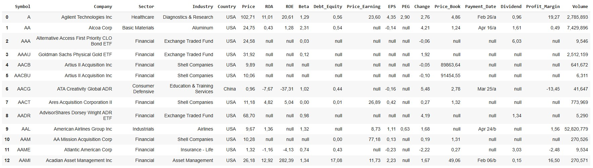

Introduction
Overview
In this project, we will develop a web scraping process to gather detailed information on the financial fundamentals of publicly traded companies. Instead of relying on the conventional Yahoo Finance API, we will utilize Python's requests and BeautifulSoup libraries, enabling more precise and flexible data extraction. It is important to note that the purpose of this project is purely educational, aimed at demonstrating the technical implementation. For ethical and legal reasons, the specific website from which the data is sourced will not be disclosed, as its use and replication require appropriate authorization.
Use case
This project focuses on web scraping to extract financial data, which can be used for investment analysis, market research, or building financial dashboards. Such data is valuable for financial analysts, investors, or data scientists looking to analyze company fundamentals without relying on paid APIs or manual data collection. Additionally, this approach allows for continuously updated datasets, without depending on third parties. It is ideal for building customized investment dashboards or performing comparative analysis of companies efficiently.
Other general applications of web scraping include:
Web scraping is a powerful tool for large-scale data collection from websites, enabling businesses and analysts to access updated information without the cost of paid APIs or the labor-intensive task of manual data gathering.
GitHub code
The complete code for this project is available on GitHub: Finance Web Scraping Code.
Python Code and Analysis
This is the set of information we aim to extract:
Figure 1: Market data
Step 1: import packages
import requests
from bs4 import BeautifulSoup
import pandas as pd
Step 2: generate needed lists
The list "pages" creates a list of numbers (sequence) representing the paging indexes for the website screener. The site displays 20 results per page, and the code assumes there are a total of 9981 items (actions).
The formula (9981-21)//20 + 1 calculates how many pages there are:
The list sequence contains: [1, 21, 41, ..., 9961] (increments of 20).
# This is a logic that allows us to navigate through all the website pages
pages = [1 + i*20 for i in range(0, (9981-21)//20 + 1)]
# Empty lists
No = []
Company = []
Sector = []
Industry = []
Country = []
PE = []
PEG = []
PB = []
Dividend = []
EPS = []
ROA = []
ROE = []
DE = []
ProfitM = []
Beta = []
Earnings = []
Volume = []
Price = []
Change = []
Ticker = []
Step 3: Loop for page scraping
Iterate over each index in sequence to access different pages of the screener.
for i in pages:
main_url = 'https://****.com/screener.****='+str(i)
headers = {"user-agent": "Mozilla/5.0 (Windows NT 10.0; Win64; x64) AppleWebKit/537.36 (KHTML, like Gecko) Chrome/88.0.4324.182 Safari/537.36"}
main_response = requests.get(main_url, headers=headers)
main_soup = BeautifulSoup(main_response.text,'html.parser')
Step 4: Table extraction
table = main_soup.find('table',class_='styled-table-new is-rounded is-tabular-nums w-full screener_table')
header = table.find('tr',align='center')
header2 = header.find_all('th',class_='table-header cursor-pointer')
cols = []
for i in header2:
col = i.text
cols.append(col)
Step 5: Rows extraction
Find all data and for each row:
rows = table.find_all('tr',valign='top')
rows1 = []
for i in rows:
test = i.find_all('td',height='10')
temp = []
for j in test:
temp.append(j.text)
rows1.append(temp)
Step 6: Data storage in lists
for i in rows1:
No.append(i[0])
Ticker.append(i[1])
Company.append(i[2])
Sector.append(i[3])
Industry.append(i[4])
Country.append(i[5])
PE.append(i[7])
PEG.append(i[8])
PB.append(i[9])
Dividend.append(i[10])
EPS.append(i[11])
ROA.append(i[12])
ROE.append(i[13])
DE.append(i[14])
ProfitM.append(i[15])
Beta.append(i[16])
Earnings.append(i[17])
Volume.append(i[18])
Price.append(i[19])
Change.append(i[20])
Step 7: Dataframe creation
Create a pandas DataFrame with the lists as columns. The column names are more descriptive than the original ones (e.g. Symbol for Ticker, Debt_Equity for DE).
df = pd.DataFrame({'Symbol':Ticker,
'Company':Company,
'Sector':Sector,
'Industry':Industry,
'Country':Country,
'Price':Price,
'ROA':ROA,
'ROE':ROE,
'Beta':Beta,
'Debt_Equity':DE,
'Price_Earning':PE,
'EPS':EPS,
'PEG':PEG,
'Change':Change,
'Price_Book':PB,
'Payment_Date':Earnings,
'Dividend':Dividend,
'Profit_Margin':ProfitM,
'Volume':Volume
})
df = df.applymap(lambda x: 'null' if x == '-' else x)
cols_to_modify = ['Price', 'ROA', 'ROE', 'Profit_Margin', 'Change',
'Price_Earning', 'PEG', 'Price_Book', 'EPS',
'Debt_Equity', 'Beta', 'Dividend']
for col in cols_to_modify:
df[col] = df[col].astype(str)
df[col] = df[col].str.replace('%', '')
df[col] = df[col].str.replace('.', ',')
Step 8: Data cleaning and formatting of numeric columns
Data cleaning:
Numeric columns formatting
- Selects columns containing numeric values or percentages.
- Converts each column to type str for manipulation.
- Removes the percent symbol (%).
- Replaces the decimal point (.) with a comma (,), probably to comply with a regional format (for example, in some countries the comma is used as a decimal separator).
df = df.applymap(lambda x: 'null' if x == '-' else x)
cols_to_modify = ['Price', 'ROA', 'ROE', 'Profit_Margin', 'Change',
'Price_Earning', 'PEG', 'Price_Book', 'EPS',
'Debt_Equity', 'Beta', 'Dividend']
for col in cols_to_modify:
df[col] = df[col].astype(str)
df[col] = df[col].str.replace('%', '')
df[col] = df[col].str.replace('.', ',')
Finally, we arrived at the desired output. We can export it to different formats such as csv, excel, json, among others.
Figure 2: Scraped market data
Conclusions
Thus, we can see how, using basic Python libraries such as requests, BeautifulSoup, and pandas, it is possible to efficiently and structurally extract financial data from websites. This approach enables the collection of valuable information for further analysis. If you want to explore one of the practical applications of this data extraction, I invite you to check out my Power BI report, where I have used this data to create an interactive dashboard that supports my investment decision-making. You can view it by clicking here.